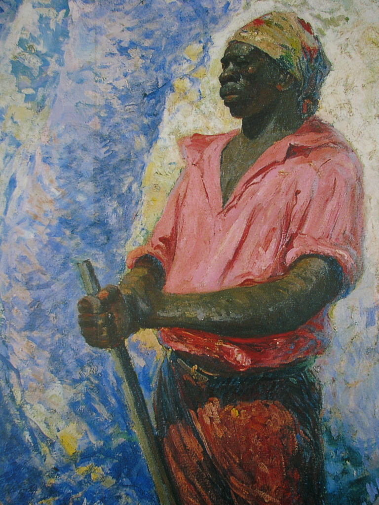
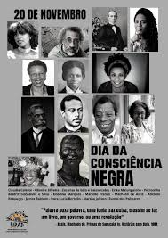
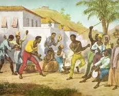
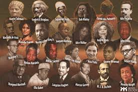

O Dia Nacional de Zumbi e da Consciência Negra, celebrado em 20 de novembro, é um marco de reflexão, resistência e valorização da história e da cultura afro-brasileira no país

A data: O dia 20 de novembro remonta a 1695, a data da morte de Zumbi dos Palmares, o último líder do Quilombo dos Palmares, assassinado em uma emboscada por bandeirantes. A ruptura com o 13 de Maio: Por décadas, o 13 de maio (Assinatura da Lei Áurea em 1888) foi tratado como a principal referência para o fim da escravidão. O movimento negro passou a criticar essa visão por retratar a liberdade como uma "concessão" do Estado, apagando a agência, as revoltas e a luta ativa dos quilombolas e escravizados.
• Nos anos 1970, o Movimento Negro Unificado (MNU) escolheu Zumbi como símbolo de resistência. • A Lei nº 10.639/2003 tornou obrigatório o ensino de História e Cultura Afro-Brasileira nas escolas. • A Lei nº 12.519/2011 instituiu oficialmente a data no calendário nacional. • A Lei nº 14.759/2023 transformou o 20 de novembro em feriado nacional.

A herança africana é a base da identidade do Brasil, manifestando-se fortemente em: • Música e Dança: Samba, maracatu, coco, jongo, axé e capoeira. • Culinária: Feijoada, acarajé, vatapá, caruru e o uso do dendê e de temperos que redefiniram a gastronomia nacional. • Religiosidade e Espiritualidade: As religiões de matriz africana (como o Candomblé e a Umbanda), que preservam sabedorias, cantos, ritos e resistências ancestrais. • Língua: Inúmeros termos do português brasileiro vêm de línguas africanas (como bunda, caçula, moleque, xodó).

• Zumbi dos Palmares: Símbolo máximo da resistência contra a escravidão e da luta por liberdade no Brasil Colonial. • Dandara dos Palmares: Guerreira e líder do Quilombo dos Palmares, cuja atuação estratégica e militar foi fundamental na defesa do território. • Machado de Assis: Um dos maiores escritores da literatura universal e fundador da Academia Brasileira de Letras. • Luisa Mahin: Figura histórica ligada às revoltas de escravizados no século XIX (como a Revolta dos Malês na Bahia). • Abdias do Nascimento: Ativista, artista, político e fundador do Teatro Experimental do Negro, ícone do Pan-africanismo no Brasil.

Combate ao Racismo Estrutural: A data evidencia que o fim da escravidão formal não eliminou as barreiras sociais, econômicas e o preconceito enfrentados pela população negra (que representa a maioria dos brasileiros, segundo o IBGE). Promoção da Cidadania: Serve como plataforma para cobrar políticas públicas de igualdade racial, inclusão no mercado de trabalho, representatividade política e redução da violência letal que atinge desproporcionalmente a juventude negra.